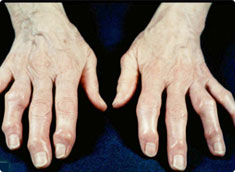
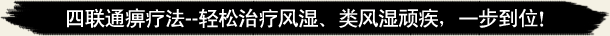
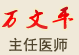

- 调查显示：在我国，至少有1亿人患有风湿类风湿疾病，而且这一数字还在逐年增加。风湿类风湿疾病常常反复发作，令患者痛苦不堪，因此被称为"不死的顽疾"。据统计，全国每年有近一半的风湿类风湿患者因没有得到及时有效的治疗出现瘫痪。目前，上海西郊骨科医院的风湿类风湿专家组不断科研，总结攻克风湿类风湿顽疾经验，吸收了国内外先进的科研成果，在风湿类风湿疾病的治疗上取得了国际突破性进展，率先推出了“四联通痹疗法”治疗风湿类风湿疾病。该疗法成功克服了传统疗法治疗时间长、疗效不确切、愈后反复发作的医学难题。以不开刀、疗效好、一次性治疗、愈后不复发的独特优势，被医学界称为治疗风湿、类风湿顽疾的"金标准"！
- >>>免费咨询在线专家
权威调查显示，全球风湿骨病患者约4亿人，是医学领域中最为庞大的一类疾病
 上海西郊骨科医院专家在自己多年实践经验的基础上,融入传统中医理论,总结出来"四联通痹疗法"治疗强直性脊柱炎,效果显着.专家针对不同病人的发病原因,同病异步,按照病情分步施以不同的治疗方法.通过浴、针、术、药四法循环,分人、分因、分病程、分病位、分步对患者进行治疗.该疗法的最大特点就是采取个体化、差异化治疗原则,使患者的各种免疫指标恢复正常,从而达到标本兼治的目的。
四联通痹疗法"将中医传统治疗方法与现代科学研究相结合,方法新颖,手段独特,可增强患者机体免疫功能,改善微循环,控制变态反应,抑制结缔组织增生,可有效改善疾病的各种症状,提高生活质量,堪称类风湿关节炎临床治疗新突破。

- 上海西郊骨科医院将20余味名贵中药材科学配伍,在熏蒸舱的作用下,熏蒸渗透和药物活血双重作用,能扩张皮肤、肌肉及关节内的血管,明显改善局部血液循环,加速炎性物质的清除,改善患处缺氧状况和理化环境,达到消炎止痛、缓解症状的作用。 包括针刀微手术、激光针等疗法,是上
海西郊骨科医院在长期临床实践的基础上研究提炼而成的特殊治疗手段.可以促进血液循环,改变局部炎变,减轻关节水肿,缓解疼痛,达到恢复骨关节运动功能的作用。 - 上海西郊骨科医院通过对支配免疫系统神经的微创手术,清除慢性非细菌性炎性介质,彻底消除沉积的免疫复合物,同时通过免疫调节,保障其营养供给,从而使机体功能得以恢复,抑制类风湿关节炎、强直性脊柱炎的病理发展,达到治愈的目的。 指因人、因病施药,根据不同病人的病
因、病位、病性使用上海西郊骨科医院研制的系列药物,修复因免疫功能紊乱导致的肌纤维损伤和坏死,抑制结缔组织增生、纤维化,改善关节血液循环,增强骨细胞代谢,抗血管内膜增生,增强机体免疫力,达到巩固疗效的目的。
- 传承中华骨魂民族文化 塑造骨科医疗高端品牌
- 木有文字木有文字木有文字木有文字木有文字木有文字木有文字木有文字木有文字木有文字木有文字木有文字木有文字木有文字木有文字木有文字木有文字木有文字木有文字木有文字木有文字木有文字木有文字木有文字木有文字木有文字木有文字木有文字木有文字木有文字木有文字木有文字木有文字………【详细】
- 传承中华骨魂民族文化 塑造骨科医疗高端品牌
- 木有文字木有文字木有文字木有文字木有文字木有文字木有文字木有文字木有文字木有文字木有文字木有文字木有文字木有文字木有文字木有文字木有文字木有文字木有文字木有文字木有文字木有文字木有文字木有文字木有文字木有文字木有文字木有文字木有文字木有文字木有文字木有文字木有文字………【详细】
- 传承中华骨魂民族文化 塑造骨科医疗高端品牌
- 木有文字木有文字木有文字木有文字木有文字木有文字木有文字木有文字木有文字木有文字木有文字木有文字木有文字木有文字木有文字木有文字木有文字木有文字木有文字木有文字木有文字木有文字木有文字木有文字木有文字木有文字木有文字木有文字木有文字木有文字木有文字木有文字木有文字………【详细】
- 传承中华骨魂民族文化 塑造骨科医疗高端品牌
- 木有文字木有文字木有文字木有文字木有文字木有文字木有文字木有文字木有文字木有文字木有文字木有文字木有文字木有文字木有文字木有文字木有文字木有文字木有文字木有文字木有文字木有文字木有文字木有文字木有文字木有文字木有文字木有文字木有文字木有文字木有文字木有文字木有文字………【详细】
- 传承中华骨魂民族文化 塑造骨科医疗高端品牌
- 木有文字木有文字木有文字木有文字木有文字木有文字木有文字木有文字木有文字木有文字木有文字木有文字木有文字木有文字木有文字木有文字木有文字木有文字木有文字木有文字木有文字木有文字木有文字木有文字木有文字木有文字木有文字木有文字木有文字木有文字木有文字木有文字木有文字………【详细】
-
擅长：综合运用中西结合的方…【详细】 简介：临床骨科四十余年，对骨科的各种常见病、疑难病的诊断、治疗…【详细】